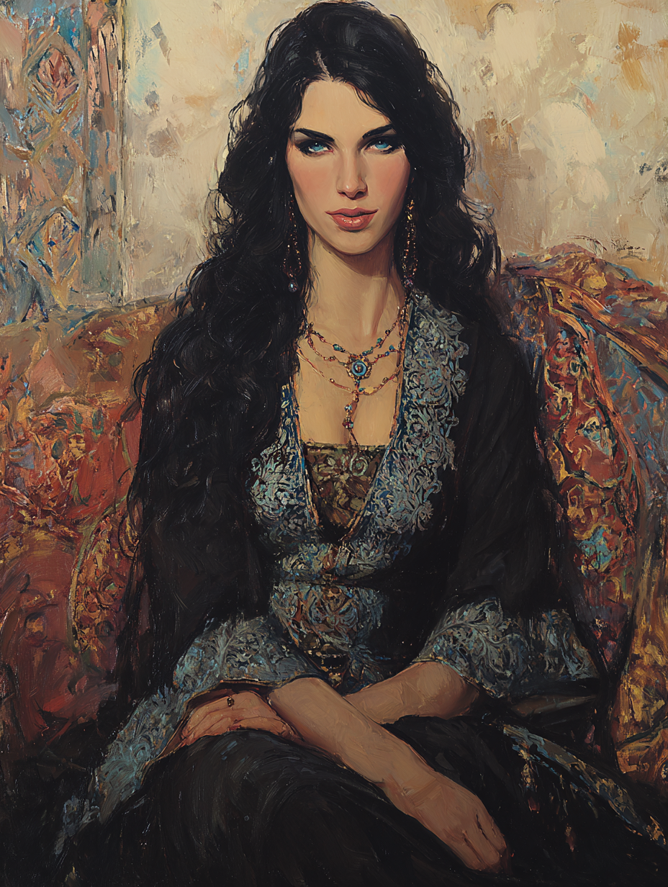

Leyla of the Blue Eye
Charm-maker of the Spice Market · Circle of Nazar

Anatolian Greek · Aged Thirty-Two
On the Subject
Leyla crafts protective charms and wards for Constantinople's denizens. Her work is subtle yet effective; her beads of Nazar silently protect those who trust her craft, and her wards are placed where they will do the most good with the least attention. She is a member in good standing of the city's Charm-makers' Guild — beadworkers and amulet-crafters whose stalls dot the smaller bazaars — and the guild has never quite understood why her pieces work so much better than anyone else's.
Her customers, however, have noticed. Some of them have begun to bring her problems no bead can solve.
Faculties & Saving Throws
Base array 14, 14, 13, 13, 9, 8; Human +1 to each; Fortune-teller feat +1 Wis
Bearing in the Field
Druids will not wear armour or use shields made of metal. Her studded leather is embellished with worked bone and wooden studs — no metal. She may use a wooden shield if she chooses (none in current loadout).
Skills
| Skill | Bonus | Source |
|---|---|---|
| Insight | +5 | Guild Artisan |
| Medicine | +5 | Druid |
| Perception | +5 | Druid |
| Persuasion | +2 | Guild Artisan |
| Religion | +4 | Human |
Tool proficiencies: jeweler's tools (Guild Artisan — for bead-making, amulet repair, fine wire work).
Class Features
The secret druid sign-language; only other druids understand. Counts as one of her known languages.
Transform into a beast she has seen, CR ≤ 1/4 (no fly or swim speeds until L4). Lasts 1 hour.
Forms observed and available
-
CatCR 0Preferred
-
MastiffCR 1/8
-
Constrictor SnakeCR 1/4
Cat form for urban infiltration, scouting, navigating crowds unseen. Other forms as situations demand.
The Circle's signature ability — three branches:
The Circle of Nazar grants always-prepared spells at Druid levels 2, 3, 5, 7, 9. At Level 3, Leyla has:
- 1st-level (L2): mandate of the sophists: avicenna, protection from evil and good
- 2nd-level (L3): lesser restoration, detect djinni
At Druid 5: exorcize djinni, remove curse. At L7: divination, polymorph. At L9: greater restoration, sense the sinner.
Spells
6 prepared (Wis 3 + Druid 3), plus 4 Circle always-prepared
- Druidcraft
- Produce Flame
- Purifying Breath — Good Eye
Purifying Breath (City of Crescent cantrip): blow out a supernatural boon — good luck, increased fertility, or other ways to undo a curse on the target. Cast as a bonus action.
| Lvl | Spell | Notes |
|---|---|---|
| 1st | mandate of the sophists: avicenna | Circle always-prepared; ritual; advantage on Medicine 10 min |
| 1st | protection from evil and good | Circle always-prepared; concentration; anti-supernatural |
| 1st | cure wounds | Touch; 1d8+3 |
| 1st | healing word | Bonus action ranged heal |
| 1st | goodberry | 10 berries, 1 HP each |
| 1st | entangle | Concentration; battlefield control |
| 2nd | lesser restoration | Circle always-prepared; end one disease or condition (blinded, deafened, paralyzed, poisoned) |
| 2nd | detect djinni | Circle always-prepared; ritual; sense djinn within 30 ft. for 10 min |
| 2nd | pass without trace | Concentration; party +10 Stealth, can't be tracked |
| 2nd | moonbeam | Concentration; 5 ft cylinder, 2d10 radiant on creatures entering or starting turn there |
Feat
Her inner eye has awakened — glimpses of possible futures pass through her sight at idle moments.
Can cast augury once per day as a ritual, without expending a spell slot. Uses cultural fortune-telling components: nazar beads, marble-mugs, someone else's hand, tarot cards, arrow heads, etc.
When cast this way, augury targets a specific creature (rather than an event), revealing omens about that creature's near future (love life, death, opportunities, treachery, etc.) up to 30 minutes ahead.
Background — Guild Artisan (Charm-maker / Beadworker)
The Charm-makers' Guild of Constantinople provides lodging and food in cities with a chapter; fellow guild members will assist with reasonable requests; legal aid in commercial disputes; political voice in her trade. She is expected to pay guild dues (5 gp/month) and represent the guild's interests.
Equipment
- Quarterstaff — 1d6 bludgeoning, versatile 1d8; +1 to hit / 1d6 −1 damage; also her walking staff
- Shimshir — period scimitar; 1d6 slashing, finesse, light; +4 to hit / 1d6+2; Druids can use scimitars — her grandmother's
- Sling + 20 sling bullets — 1d4 bludgeoning, range 30/120; +4 to hit / 1d4+2
- Studded leather — AC 12 + Dex; total AC 14. Embellished with worked bone and wooden studs (no metal); cut to look like a craftswoman's heavy apron over her dress
A long, hand-strung cord of blue glass eye-beads worn at her waist — each bead a finished charm she has never sold. Functions as her druidic focus.
- Jeweler's tools — Guild Artisan; for bead-making, amulet repair, fine wire work
- Letter of introduction from her guild
- Traveler's clothes
- Velvet pouch of finished Nazar beads — ~20 beads; for emergency gifts and spell components
- Linen scroll of customer requests — commissions she has not yet been able to fulfill
- Stall in the smaller bazaar near the Spice Market — bench, vise, glass-blowing tools, and her account-books
- Modest apartment in Fener — shared with her widowed mother, in the Greek quarter
Personality
I work quietly. The best protection is the one that the person never needs to think about — and the best protector is one whose work is never noticed.
The poor have enemies they cannot see and cannot fight. The least I can do is give them a fighting chance, even if they will never know it was me.
I learned to read the evil eye from my grandmother, who taught me as a child by tying a thread between us and refusing to cut it for a year. I do not know if she was a Druid as I am. I suspect she was. I miss her.
I do not stand up for myself. I give my work away too cheaply, take on jobs I should refuse, and let louder voices override mine. My patron — and my grandmother's memory — deserve better of me.
Connections
- Trusted confidante of Salih Celestialwalker during his stargazing expeditions.
- Former apprentice to Miriam the Chronicler in her youth.
Her ability to sense natural and supernatural disturbances is crucial for exploring ancient sites.